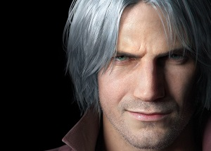

Devil May Cry 5 es un videojuego perteneciente al género hack and slash,
desarrollado y publicado por la empresa Capcom. Fue lanzado el 8 de marzo de 2019,
para las plataformas PlayStation 4, Xbox One y Microsoft Windows.
Personajes

El legendario cazador de demonios Dante reaparece en la nueva entrega de la saga lleno de un nuevo arsenal
de armas y acompañado de su espada Rebellion.
El experimentado cazador debera enfrentarse a un nuevo enemigo que pondra a prueba todas sus habilidades.
Pero serán suficientes esta vez?
El nuevo cazador de demonios Nero vuelve a la aventura esta vez con sed de venganza luego de que un
desconocido le arrebatara su brazo y gran parte de su poder adquirido en la anterior entrega.
Nero cuenta con su espada Red Queen y esta vez contara con brazos mecanicos que incorporan nuevos
movimientos al videojuego lo cual sera brutal dentro de la experiencia del usuario.
V es el nuevo y misterioso personaje que se incorpora al Staff de Devil May Cry 5, V solicita los servicios
de nuestro cazademonios Dante para acabar con un demonio conocido como Urizem.
A diferencia de los dos protagonistas anteriores V tendra un estilo de juego completamente diferente y más innovador de la saga.
De donde sale este personaje y que nos oculta?